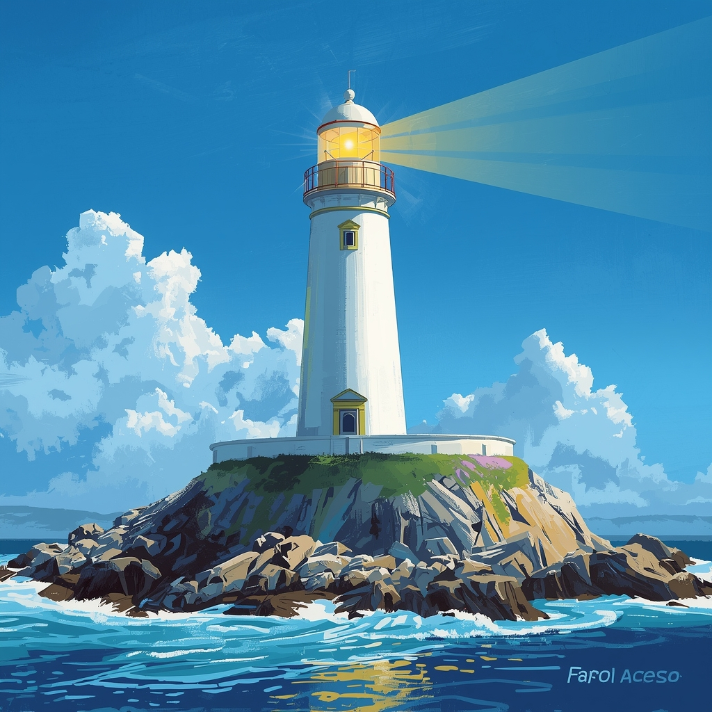

Você herda um antigo medalhão de família com uma inscrição: "Procure a luz onde o tempo parou, no Farol Esquecido." Para começar, você deve escolher onde buscar a primeira pista sobre sua localização.
Nos arquivos de Lisboa, você encontra um diário de bordo. A pista é sobre "a cidade afundada" que guarda o caminho para o Farol. Você decide se foca em encontrar o mapa ou em saber a lenda local.
Em Tortuga, no Caribe, as lendas falam de um tesouro deixado por um capitão. A pista diz: "O Farol repousa na Ilha do Silêncio". Você decide por qual via tentar chegar a essa ilha.
Após uma busca exaustiva, você encontra um mapa submerso que indica o Farol Esquecido em uma ilha isolada no Atlântico Norte: a **Ilha do Silêncio**.
Os arquivos são demais para você. Você desiste da busca e o mistério do Farol Esquecido permanece intacto.
Com seu barco rápido, você chega à Ilha do Silêncio! No convés, você encontra um pergaminho que indica o próximo desafio: escalar o penhasco até o topo do Farol.
Os pescadores locais, desconfiados, lhe dão informações falsas. Você perde tempo explorando ilhas vazias.
Você chega à base da **Ilha do Silêncio**, o Farol Esquecido se ergue no topo de um penhasco traiçoeiro. Há duas rotas para a cúpula.
Você fretou o barco a tempo. Agora, no convés, você encontra o pergaminho que indica a escalada ao Farol.
A escadaria desmorona sob seus pés! Você consegue se salvar, mas descobre que a escada está bloqueada. Você precisa tentar a face rochosa.
A escalada é difícil, mas você chega ao topo. Dentro da cúpula do Farol Esquecido, você encontra uma antiga alavanca.

Ao puxar a alavanca, a luz do Farol se acende pela primeira vez em séculos, revelando um compartimento secreto com o verdadeiro tesouro: a sabedoria da história marítima!
Você decide escalar a rocha. A escalada é difícil, mas você chega ao topo, encontrando a antiga alavanca na cúpula.